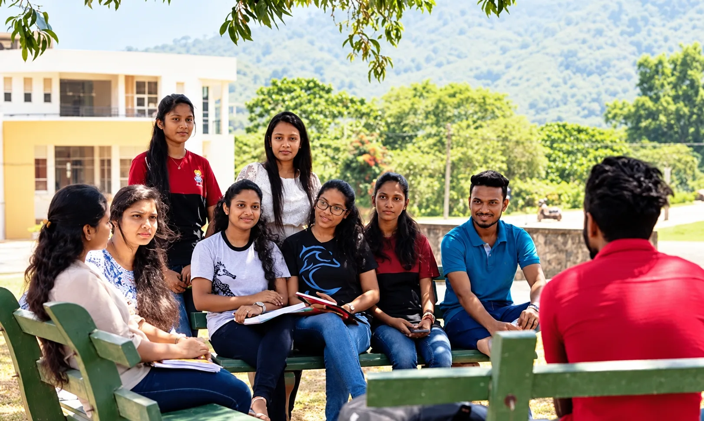
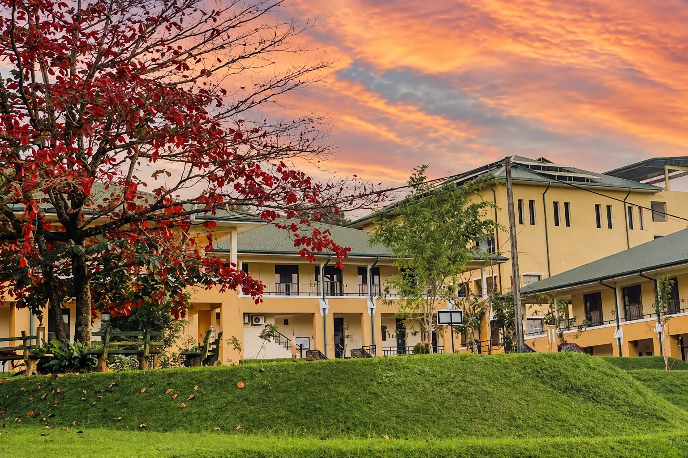
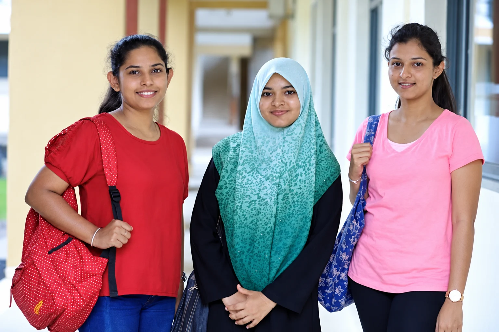
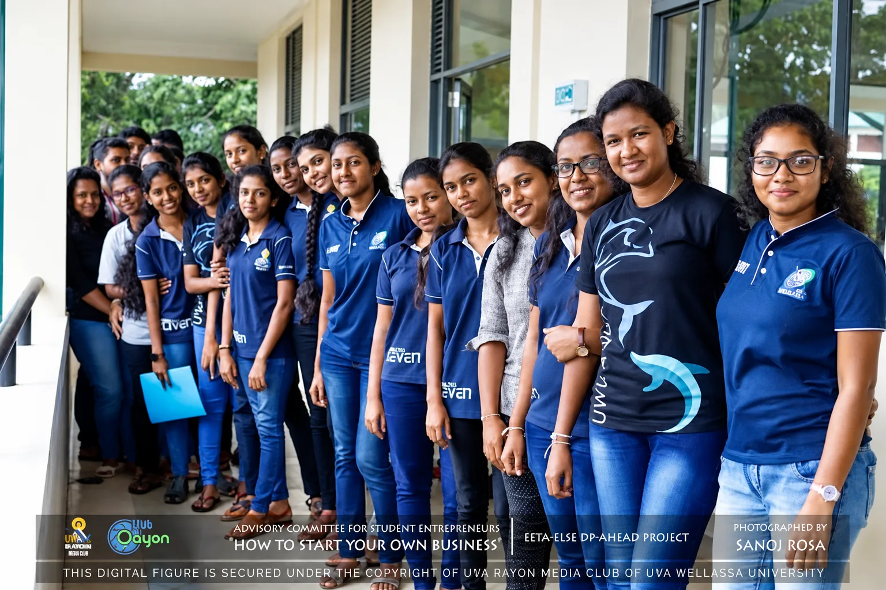

Strategic Management
Organisational strategy, competitive advantage, business model innovation and corporate governance.
About
The Faculty of Management at Uva Wellassa University is committed to advancing knowledge through high-quality, impactful research across the fields of business, management, tourism, public administration, and language studies.
Our faculty members actively engage in both fundamental and applied research, publishing in nationally and internationally recognised journals, presenting at conferences, and collaborating with industry and government. Research at FOM is guided by a commitment to evidence, rigour, and relevance to the Sri Lankan development context.
The faculty actively encourages undergraduate and postgraduate students to participate in supervised research and supports researchers at all levels through resources, mentorship, and collaborative platforms such as the ENM & HRD Research Circles.
Organisational strategy, competitive advantage, business model innovation and corporate governance.
Hospitality, Tourism, Events, Travel & tourism marketing, Sustainable tourism, Gastronomy tourism, Travel, MICE tourism, Human Resource Management, Entrepreneurship, Destination management
Human Resource Development, Learning and Development, Coaching and Mentoring, Workforce Diversity, Employee performance
SME development, startup ecosystems, innovation management and entrepreneurial behaviour.
Talent management, employee engagement, organisational behaviour and workplace diversity.
Digital marketing, brand management, consumer insights and market analysis.
Financial performance, accounting standards, microfinance and fiscal policy research.
Applied linguistics, language teaching pedagogy, and professional communication studies.
Scholarly Output
Page 1 of 30 · 150+ publications total
Academic Publishing
A peer-reviewed academic journal publishing original research articles, review papers and case studies across business management, tourism, public administration, and related disciplines. All submissions undergo a rigorous double-blind peer review process. The journal is open-access and freely available to researchers worldwide.
November 2025
View Special Issue on Rural Development (opens in a new tab)Academic Events

The National Summit on Rural Development – The 2025 Uva Dialogue is a flagship initiative jointly organized by the Department of Rural Development of the Uva Provincial Council and the Faculty of Management of Uva Wellassa University. It is designed as a comprehensive platform to foster multi-stakeholder dialogue, knowledge exchange, and collaborative policymaking aimed at transforming the rural landscape of Uva Province and contributing to national development priorities. The National Conference on Rural Development (NCRD 2025), which will serve as a hub for academics, policymakers, practitioners, private sector representatives, and community leaders to engage in evidence-based discussions on critical areas such as sustainable rural development, entrepreneurship and SME strengthening, innovation and technology adoption, reintegration of return migrants, infrastructure improvement, and the promotion of public-private partnerships.

International Conference on Multidisciplinary Development and Financial Inclusion (ICMDFI 2026) is an international conference, organized by the Faculty of Management, Uva Wellassa University of Sri Lanka, brings together researchers, policymakers, regulators and practitioners to advance knowledge and foster dialogue on multidisciplinary development and financial inclusion. The conference provides an international platform to share research findings, exchange perspectives and explore innovative solutions for inclusive economic growth. It places particular emphasis on financial literacy and multidisciplinary approaches to addressing regional economic disparities, strengthening financial resilience, and enabling individuals and communities to participate effectively in the financial system.
Research Community
The ENM Research Circle, organized by the Department of Management Sciences, is a dedicated academic community fostering research collaboration, knowledge sharing, and scholarly development among faculty members while strengthening the research culture of the Department. The Research Circle was initiated under the leadership of Prof. N. P. R. Deyshappriya, Head of the Department of Management Sciences, as an initiative to promote a collaborative and research-oriented academic environment within the Department.
The Circle hosts regular seminars, colloquia, paper presentation sessions and research skills workshops, providing a supportive environment for researchers at all levels.
The HRD Research Circle, organized by the Department of Public Administration, is a dedicated academic community that promotes research collaboration, knowledge sharing, and scholarly development among faculty members. Initiated under the leadership of Prof. P. H. T. Kumara, the Research Circle aims to strengthen the research culture of the Department by fostering a collaborative and research-oriented academic environment in the field of Human Resource Development.
4th June 2026
Practical session on Analyzing Data Using SmartPLS 4 Software, designed to provide participants with hands-on experience in data analysis, PLS-SEM techniques, model development, assessment, and interpretation of research findings using SmartPLS 4.
8th July 2026
Practical session on Systematic Literature Review, providing participants with hands-on guidance on developing research questions, conducting systematic searches, screening and evaluating literature, and synthesizing findings using a structured and rigorous review process.
18th August 2026
Academic session on Novel Avenues in Academic Research and New Trends in Entrepreneurship Education, exploring emerging research directions, innovative methodologies, current trends, and new approaches to strengthening entrepreneurship education and scholarly practice.
Student Research
Celebrating outstanding undergraduate research projects that demonstrate academic rigour, originality and practical relevance across our four departments.

Management Studies
K.K.G.A.S Jayathilaka, T.G.A.H.C.Amarawansha
Entrepreneurship and Business Management Track - (Session 01 Best Paper of the track) - Paper ID - 226 at IRCUWU 2025/2026

Tourism Studies
D.S.A. Silva, P.I.N. Fernando and P.G.S.S. Pattiyagedara
Hospitality and Tourism Track - (Best Paper of the Session 01 and the track) - Paper ID - 135 at IRCUWU 2025
Tourism Studies
G.W.I. Madusanka, K.B. Wijesekara and W.M.A.H. Bandara
Hospitality and Tourism Track - (Best Paper of the Session 02) - Paper ID - 622 at IRCUWU 2025
Contact the ENM Research Circle or the Faculty Research Coordinator to discuss collaboration, co-authorship or joint research project opportunities.
Reach out to the Faculty Research Coordinator or the ENM Research Circle for guidance and support.